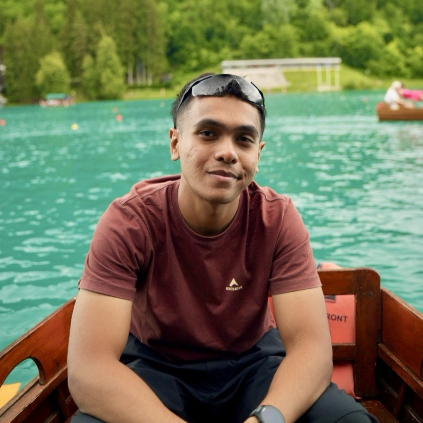

🚀Afham
Systems & Hardware Engineer
Autonomous Systems · Soft Robotics · Functional Hardware
I am a multidisciplinary hardware engineer with a focus on biomimetic robotics, mechanical packaging, and rapid prototyping. I enjoy translating first-principles physics into practical, robust hardware systems.
Previously led the design and testing of novel underwater soft-actuation systems recognized by the James Dyson Award. Passionate about marine conservation engineering, field verification, and reliable systems architecture.
Projects
Selected hardware builds and functional prototypes.
JellyBot 2.0
Soft RoboticsA low-cost, bio-inspired soft-robotic underwater vehicle designed for non-invasive coral surveillance. Features an industrial acrylic pressure hull sealed with marine-grade O-rings, custom 3D-printed flap clamps, and an 8-tentacle soft pneumatic bell.
Recognition
Awards, design honors, and engineering commendations.
James Dyson Award — National Runner-Up
Recognized for novel bio-inspired marine conservation design.
Tan Kah Kee Young Inventors' Award
Commendation Award for multidisciplinary engineering novelty and practical problem solving.